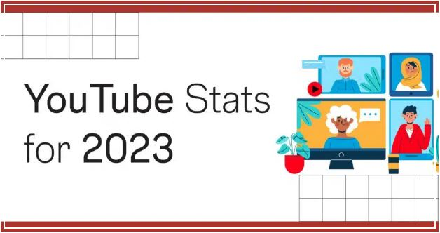
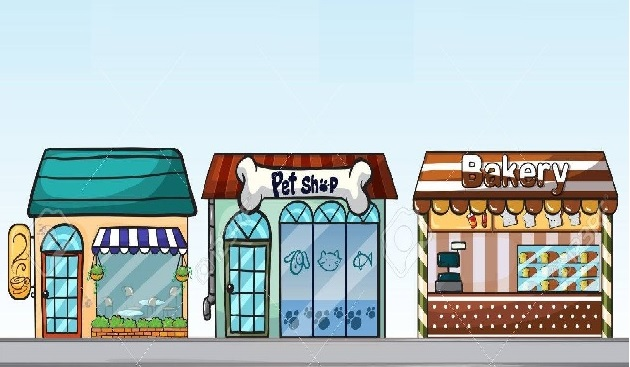

Exploratory Data Analysis using Kaggle Datasets.
Analyzing and visualizing the data available in Kaggle
datasets to gain insights into its structure, patterns,
and characteristics.
Being Python one of the most popular and widely used
programming languages for data science.
Below I worked with real problems, practicing core data skills, and improving with interactive hands-on Kaggle projects.
Global YouTube Statistics 2023
The dataset includes comprehensive data on the top 1000 Youtube channels in 2023 according to the number of subscribers. There are further columns in addition to the name, ranking, and subscribers that include information about the number of views, category, country, minimum and maximum earnings, as well as other valuable elements for analysis.
Superstore Sales
The "Superstore Sales" dataset is a comprehensive and versatile collection of data that provides valuable insights into sales, customer behavior, and product performance. This dataset offers a rich resource for in-depth analysis.
Data Analyst Salary
Dataset obtained from multiple sources, including surveys, job posting sites, and other publicly available sources.A total of 6704 data points were collected.The dataset included fivevariables: age, experience, job role, and education level and salary.
Global Country Information Dataset 2023
This comprehensive dataset provides a wealth of information about all countries worldwide, covering a wide range of indicators and attributes. It encompasses demographic statistics, economic indicators, environmental factors, healthcare metrics, education statistics, and much more. With every country represented, this dataset offers a complete global perspective on various aspects of nations, enabling in-depth analyses and cross-country comparisons.
Movie Industry Scenario
Is the movie industry dying? is Netflix the new entertainment king? Those were the first questions that led to create a dataset focused on movie revenue and analyze it over the last decades. But, why stop there? There are more factors that intervene in this kind of thing, like actors, genres, user ratings and more. So, with this Datset, we can ask specific questions about the movie industry, and get answers.
jchpabon@gmail.com
346-317-7255
Katy, TX 77494
United States of America
United States of America